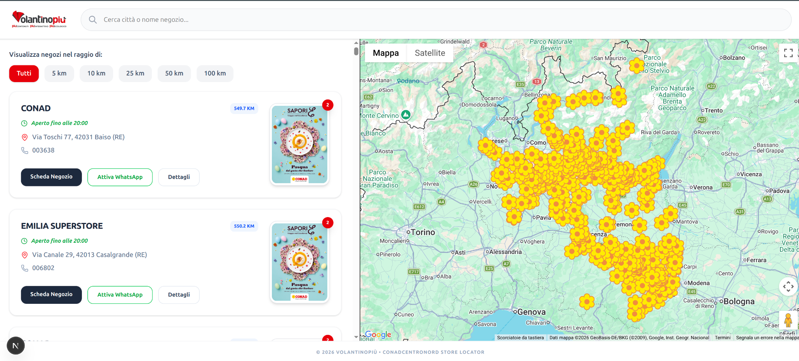
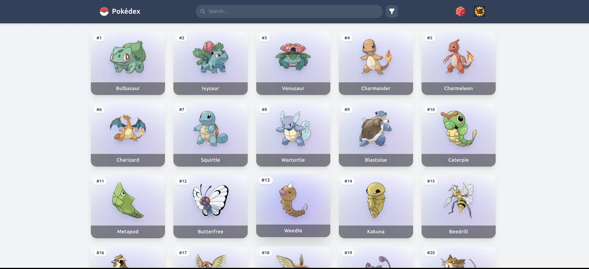
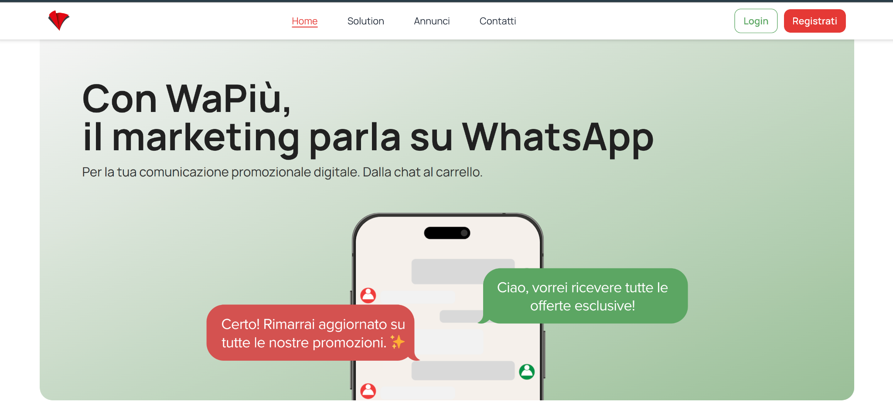
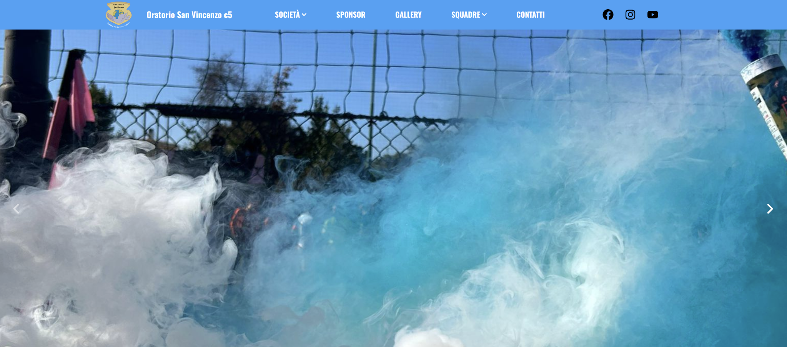
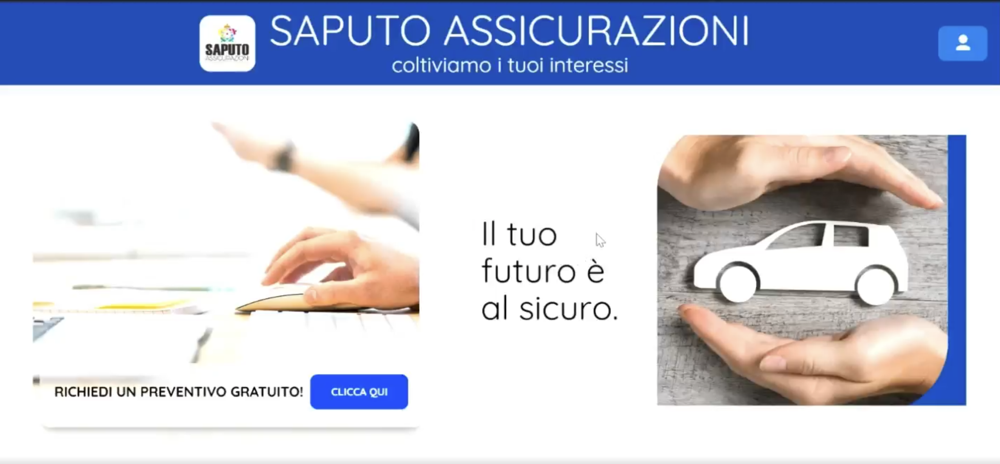
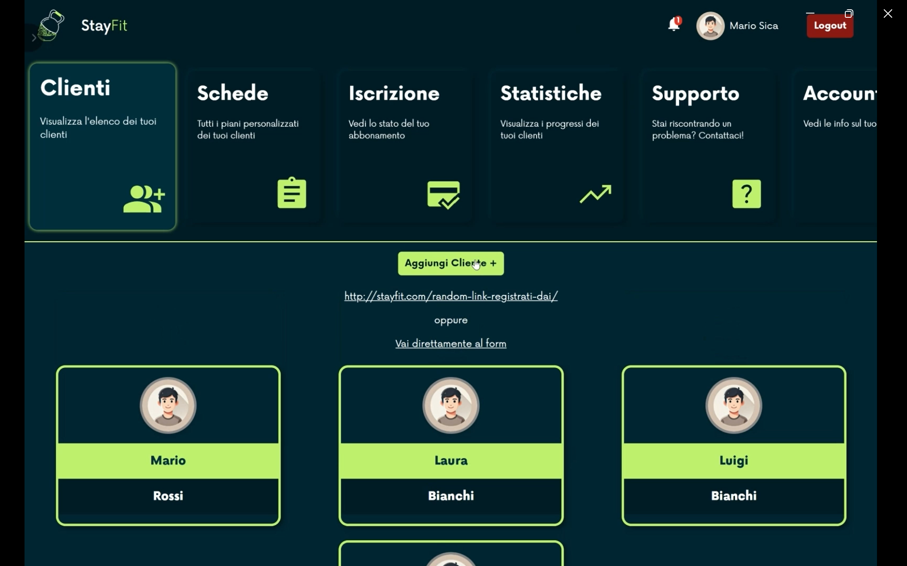
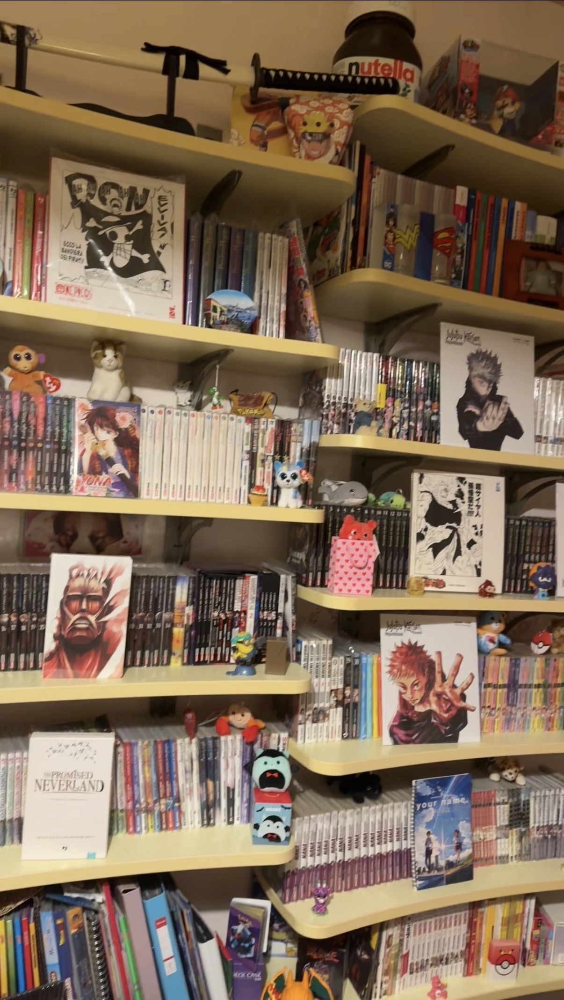
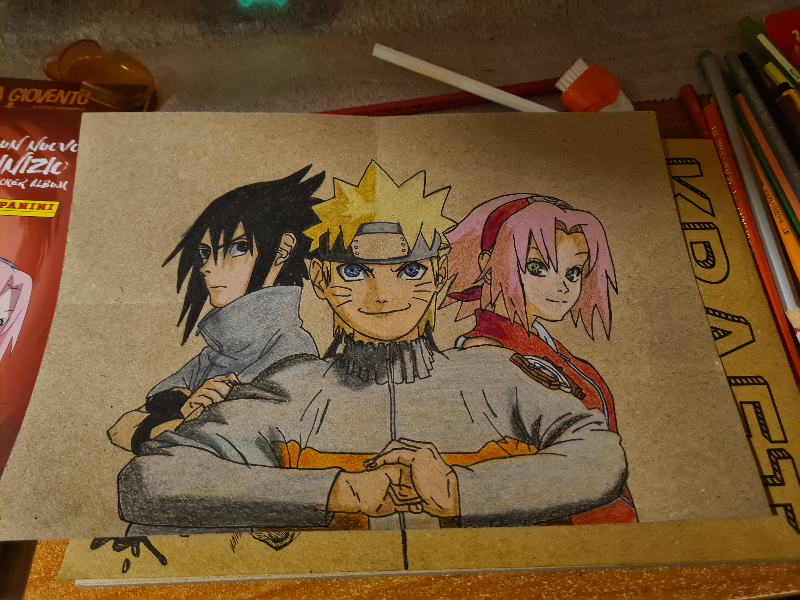
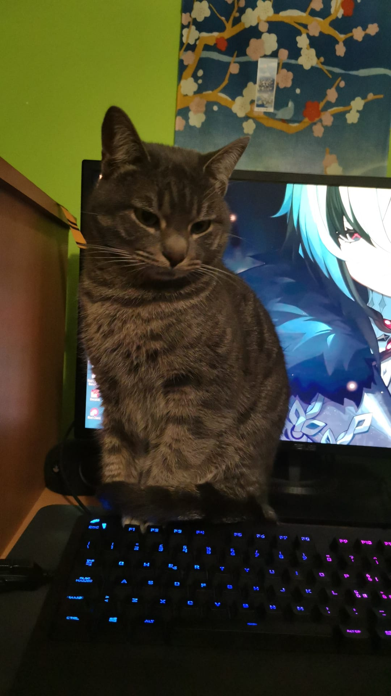

< Chi sono />
Frontend / Full Stack Developer con una forte passione per la tecnologia e lo sviluppo web moderno.
Vedo il web non solo come tecnologia, ma come uno spazio creativo in cui idee, funzionalità e identità possono prendere forma. Mi piace costruire applicazioni che non siano solo performanti, ma anche curate nei dettagli e capaci di offrire un’esperienza chiara e coinvolgente.
Lavoro principalmente con React, TypeScript e Node.js, stack con cui sviluppo interfacce moderne e applicazioni scalabili. Grazie a questa base, ho approfondito anche Angular, realizzando in autonomia un progetto dedicato al mondo Pokémon. L’esperienza con React mi ha permesso di comprendere più rapidamente le logiche di Angular, rendendo il passaggio tra i due framework naturale e stimolante.
Le mie passioni influenzano profondamente il mio modo di sviluppare. Anime, manga e videogiochi mi hanno insegnato l’importanza della cura dei dettagli, della coerenza e della costruzione di esperienze immersive. In particolare, opere come Attack on Titan e Naruto rappresentano per me esempi di identità, evoluzione e profondità narrativa.
Allo stesso tempo, la natura e gli animali mi portano a ricercare equilibrio e semplicità, mentre arte e musica alimentano la mia creatività e il senso estetico nei progetti.
Mi appassionano il problem solving, la progettazione di interfacce intuitive e la creazione di esperienze digitali ben strutturate, dove logica e creatività si incontrano per dare vita a qualcosa di significativo.
< Tech Stack />
Linguaggi
Frontend Framework
Backend
Database
Tools & DevOps
< Projects />

STORE LOCATOR
Applicazione web sviluppata durante il mio ultimo periodo in Volantinopiù per la visualizzazione e gestione di punti vendita su mappa interattiva. Sviluppo di un’interfaccia frontend responsive per la ricerca e visualizzazione dei negozi Integrazione di API per il recupero dinamico dei dati dei punti vendita Implementazione di una mappa interattiva con marker geolocalizzati e clustering Realizzazione di schede negozio con informazioni dettagliate e stato di apertura Integrazione di funzionalità di contatto rapido tramite WhatsApp Filtri per distanza (km) e ricerca per città o nome negozio Gestione dello stato e interazioni utente in ottica UX moderna

POKEDEX ANGULAR
Ho realizzato questo progetto in autonomia con l’obiettivo di approfondire Angular e comprenderne a fondo il funzionamento attraverso un approccio pratico. Per rendere l’apprendimento più stimolante, ho deciso di unire lo studio del framework alla mia passione per il mondo Pokémon, sviluppando una Pokédex interattiva. L’applicazione si basa sull’utilizzo di una API pubblica dedicata ai Pokémon, che mi ha permesso di gestire chiamate HTTP, organizzare i dati e costruire un’interfaccia dinamica e reattiva. Durante lo sviluppo ho lavorato su componenti, servizi, routing e gestione dello stato, consolidando competenze già acquisite in React e adattandole all’ecosistema Angular. Questo progetto rappresenta per me un passaggio importante: mi ha permesso di apprendere rapidamente un nuovo framework grazie alle basi solide di frontend già sviluppate, dimostrando la mia capacità di adattamento e apprendimento continuo.

WAPIÙ
Landing page sviluppata durante il mio percorso in stage presso Volantinopiù, progettata per la promozione di un servizio di marketing su WhatsApp. Ho realizzato un’interfaccia moderna e responsive utilizzando React e TailwindCSS, curando l’esperienza utente e la struttura dei contenuti per una comunicazione chiara e orientata alla conversione. L’applicazione è supportata da un backend sviluppato in Node.js ed Express per la gestione delle richieste e l’integrazione dei servizi. Il progetto è stato containerizzato con Docker per facilitare il deploy e la gestione degli ambienti.

SITO ORATORIO SAN VINCENZO
Progetto sviluppato in team con un colleague al termine di un corso intensivo di 6 mesi presso Develhope. Abbiamo realizzato un sito web moderno e responsive utilizzando React, JavaScript, HTML5 e TailwindCSS, progettato per offrire un’esperienza utente semplice, intuitiva e accessibile. L’obiettivo del progetto era creare un sito rappresentativo capace di raccontare la storia, le attività e i successi della squadra, offrendo un punto di riferimento online per tifosi e membri della comunità. Il sito è stato sviluppato seguendo un approccio mobile first, garantendo un’esperienza fluida e ottimizzata su smartphone e tablet, senza compromettere la qualità su desktop. Durante lo sviluppo abbiamo lavorato sulla progettazione dell’interfaccia, sulla struttura delle pagine e sull’organizzazione dei contenuti, integrando anche widget esterni (TuttoCampo.it) per fornire dati aggiornati e informazioni rilevanti. Il progetto è stato infine pubblicato online tramite Netlify.

LANDING-PAGE SAPUTO ASSICURAZIONI
Progetto sviluppato in team con un collega al termine di un corso intensivo di 6 mesi presso Develhope. Abbiamo realizzato un sistema backend strutturato per la gestione delle richieste di preventivo, progettato per essere sicuro, veloce e facilmente utilizzabile dagli operatori. L’obiettivo del progetto era creare un’infrastruttura in grado di ricevere, archiviare e gestire i dati in modo efficiente, garantendo al tempo stesso un alto livello di protezione delle informazioni sensibili. Il backend è stato sviluppato utilizzando Node.js ed Express.js per la creazione di API REST, con un database MySQL per la gestione dei dati, testato tramite DBeaver. Per il testing delle API abbiamo utilizzato Postman. Particolare attenzione è stata dedicata alla sicurezza: abbiamo implementato autenticazione tramite JWT per proteggere le rotte sensibili, utilizzato query parametrizzate per prevenire SQL injection e migliorato la gestione degli errori per rendere il sistema più stabile e affidabile. È stata inoltre integrata la gestione dei file tramite Multer, permettendo il caricamento sicuro di documenti come carta d’identità e libretto del veicolo.

STAYFIT APP
ultimo progetto presentato nel mio corso in develhope che riassumeva tutti gli argomenti trattati durante i 6 mesi di corso, con l’obiettivo di realizzare un’applicazione full stack completa. Ho sviluppato una piattaforma dedicata al fitness, dove gli utenti possono registrarsi, creare un profilo, accedere a programmi di allenamento personalizzati e monitorare i propri progressi. Il backend è stato realizzato con Node.js ed Express.js, utilizzando MySQL per la gestione dei dati e implementando funzionalità di autenticazione tramite JWT. Il frontend è stato sviluppato con React e TailwindCSS, creando un’interfaccia moderna e user-friendly. Questo progetto rappresenta una sintesi delle competenze acquisite durante il corso, dimostrando la mia capacità di progettare e sviluppare un’applicazione web completa, con particolare attenzione alla sicurezza, alla scalabilità e all’esperienza utente.
< Gallery />



< Contatti />
Sono alla ricerca di nuove opportunità professionali come Frontend o Full Stack Developer. Se cerchi una persona motivata, con tanta voglia di imparare e di portare valore al tuo team, non esitare a contattarmi!